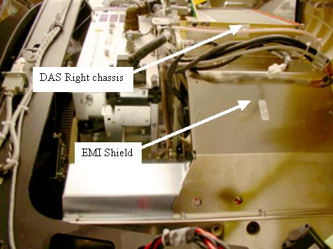
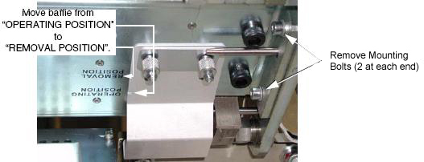
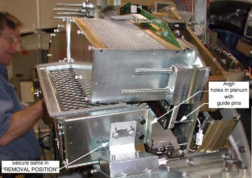

Operating Documentation
Direction 5193755-800, Rev# 8
BrightSpeed (Ltd. Access) Service Methods - Adv
Operating Documentation |
| Required Persons | Preliminary Reqs | Procedure | Finalization |
|---|---|---|---|
| 1 |
Remove Air plenum:
Rotate and lock gantry at the 12 O’clock position.
Disconnect fan power harness.
Remove air plenum.
| Last Revised: | March 16, 2005 |
| Item | Qty | Effectivity | Part# | Manufacturer | |
|---|---|---|---|---|---|
| Standard FE Tool Kit | 1 | - | - | - | |
| Always turn OFF the HVDC before the 12VAC. Turning OFF 120VAC power before HVDC power can result in equipment damage. | |
Remove gantry covers, shut OFF power, and lock the gantry in position (see Accessing the DAS Assembly).
Unscrew four (4) screws, and remove the EMI shielding plate if it exists on the system (not all systems have this plate). See Illustration 1.
Illustration 1: DAS shielding plate

Disconnect Fan AC power at Connector J22.
Set air baffles on either end of the duct to the “Removal Position” (see Illustration 2):
Loosen knurl nuts
Slide baffle into position
Hand tighten knurl nuts
Illustration 2: DAS Air Plenum: Baffle & Mounting Bolts

Remove four (4) mounting bolts (2 at each end). See Illustration 2.
Carefully slide the plenum towards the front, without catching wires or Detector flexes.
Set the plenum aside, on a clean surface.
Continue with replacement procedures that required removal of this plenum.
Ensure that baffles are secured in “REMOVAL POSITION”.
Illustration 3: DAS Air Plenum Installation

Lift plenum into place, and align guide holes with guide pins.
Slide plenum onto guide pins.
Fasten plenum securely into place, using the four (4) mounting bolts and four lock washers. Torque to the following values depending on which system type you have.
Table 1: 4/8 Slice Systems
| 7.9 N-m | 5.8 lb-ft | 70 lb-in | 80.5 kg-cm |
Table 2: 16 Slice Systems
| 38.4 N-m | 28.3 lb-ft | 340 lb-in | 391.4 kg-cm |
Return baffles to the “OPERATING POSITION”.
Install the EMI shielding plate using four (4) screws, lock washers, and flat washers. Torque to values shown in Table 3.
Table 3: EMI shield Torque
| 7.9 N-m | 5.8 lb-ft | 70 lb-in | 80.5 kg-cm |
Connect Fan AC power at Connector J22.
Remove rotational lock, restore power and reassemble gantry covers.
No finalization required.